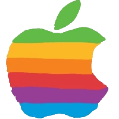

Welcome To
Knights Of Queen02
A modern, fast, and powerful
open-source repository for
exclusive iOS customization.
A modern, fast, and powerful
open-source repository for
exclusive iOS customization.